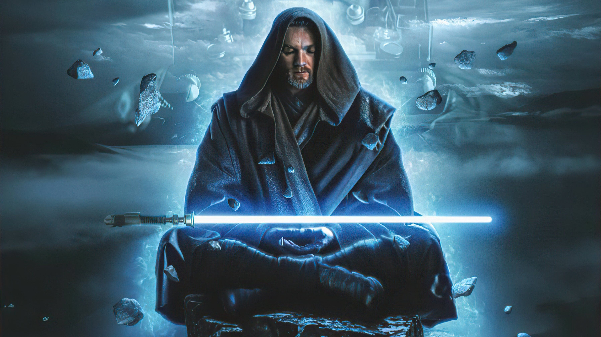

-
Darth Vader
Descrição
Outrora o heróico Cavaleiro Jedi chamado Anakin Skywalker, Darth Vader foi seduzido pelo lado negro da Força. Para sempre marcado por sua derrota em Mustafar, Vader foi transformado em um Lorde Sith aprimorado ciberneticamente. No início do Império, Vader liderou a erradicação da Ordem Jedi pelo Império e a busca por sobreviventes. Ele permaneceu a serviço do Imperador – o malvado Darth Sidious – por décadas, fazendo cumprir a vontade de seu Mestre e tentando esmagar a Aliança Rebelde e outros detratores. Mas ainda havia algo de bom nele...
-
Mestre Yoda

Descrição
Yoda era um Mestre Jedi lendário e mais forte do que a maioria em sua conexão com a Força. Pequeno em tamanho, mas sábio e poderoso, ele treinou Jedi por mais de 800 anos, desempenhando papéis essenciais nas Guerras Clônicas, na instrução de Luke Skywalker e abrindo o caminho para a imortalidade.
-
Ashoka Tano

Descrição
A ex-Cavaleira Jedi Ahsoka Tano já serviu como aprendiz Padawan do Jedi Anakin Skywalker durante as Guerras Clônicas. Um líder respeitado e guerreiro sintonizado com o lado leve da Força, Ahsoka tornou-se um lutador formidável antes que o reinado do Império mudasse o curso da história galáctica. Embora ela tenha se afastado da Ordem Jedi, ela continuou a defender aqueles que lutavam pela paz e pela justiça na galáxia muito depois da queda da República.
-
Obi-Wan-Kenobi
Descrição
Um lendário Mestre Jedi, Obi-Wan Kenobi era um homem nobre e talentoso nos caminhos da Força. Ele treinou Anakin Skywalker, serviu como general no Exército da República durante as Guerras Clônicas e guiou Luke Skywalker como mentor.
-
R2-D2

Descrição
Um droide astromecânico confiável e versátil, R2-D2 serviu Padmé Amidala, Anakin Skywalker e Luke Skywalker, mostrando grande coragem ao resgatar seus mestres e seus amigos de muitos perigos. Um habilidoso mecânico de nave estelar e assistente de piloto de caça, ele tem uma amizade improvável, mas duradoura, com o exigente andróide de protocolo C-3PO.
-
Imperador Palpatine

Descrição
O lado negro da Força é um caminho para muitas habilidades que alguns consideram não naturais, e Sheev Palpatine é o mais infame seguidor de suas doutrinas. Conspirador, poderoso e maligno, Darth Sidious restaurou os Sith e destruiu a Ordem Jedi. Vivendo uma vida dupla, ele também era Palpatine, um senador de Naboo e uma ameaça fantasma. Ele manipulou o sistema político da República Galáctica até ser nomeado Chanceler Supremo – e eventualmente Imperador – e governou a galáxia através do medo e da tirania. A galáxia se alegrou quando ele morreu na Batalha de Endor, mas Sidious enganou a morte e planejou pacientemente um retorno ao poder.